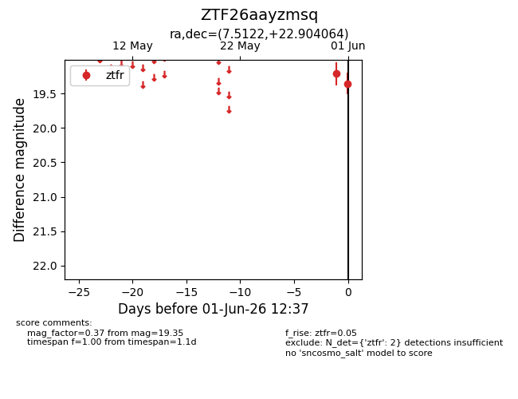
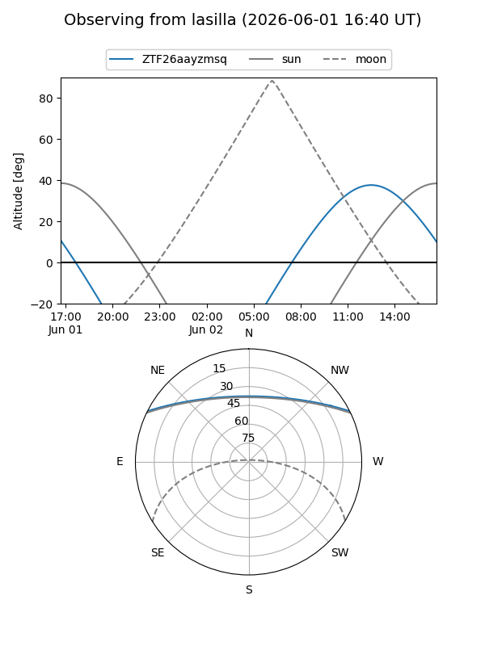
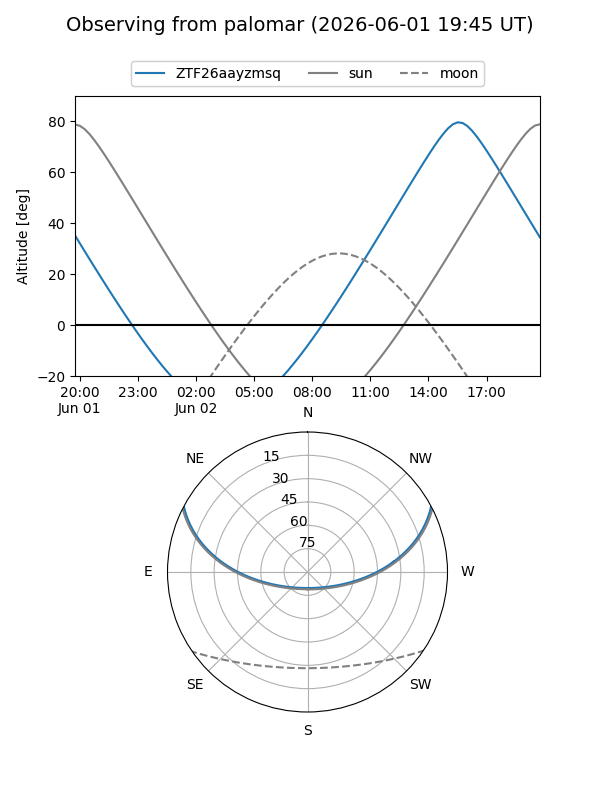

ZTF26aayzmsq
Target ZTF26aayzmsq at 2026-06-01 12:38
Aliases and brokers:
lsst-FINK: link
lsst-Lasair: link
lsst-ALeRCE: link
ztf-FINK: link
ztf-Lasair: link
ztf-ALeRCE: link
alt names
ZTF26aayzmsq (ztf,fink_ztf)
Coordinates:
equatorial (ra, dec) = 7.5122,+22.90406
equatorial (HMS+DMS) = 00:30:02.92,+22:54:14.63
galactic (l, b) = (116.5257,-39.70148)
Flags:
Photometry:
last ztfr=19.35
2 ztfr detections
Lightcurve

Visibility


Additional plots